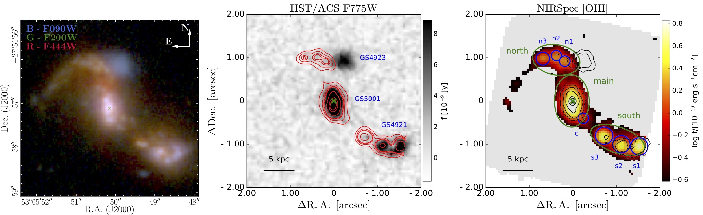
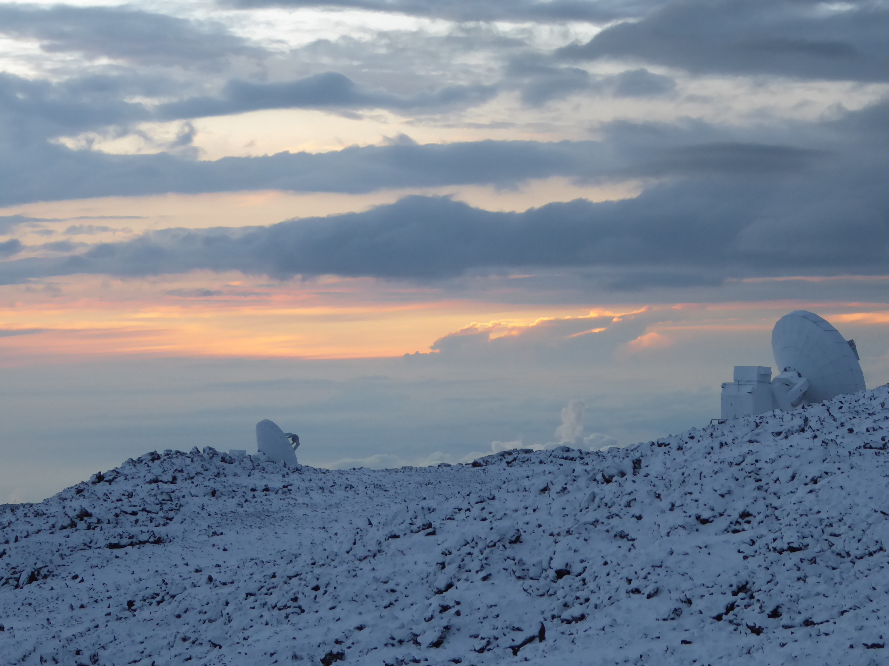
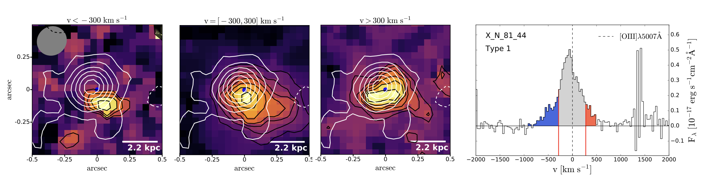

![ Identification of galaxies and structures around GS5001. Left: NIRCam three-color image of GS5001. Middle: HST/ACS F775W band UV image with contours of the NIRSpec [OIII] emission in red. Right: NIRSpec [OIII] flux map with contours of the HST/ACS F775W emission in black. Blue and green regions mark the different components identified in the [OIII] map.](images/GS5001_fig1.jpg){kind=link}
{kind=link}
Moreover, we found that the mass outflow rates do not follow a tight relation with the AGN luminosities, as reported in previous works (e.g. Cicone et al. 2014). This means that the AGN luminosity is not the only factor influencing the power of the outflow, and this needs to be taken into account in cosmological simulations.
Here is the link to the paper presenting this work:
Lamperti et al. (2022): PUMA IV

I am a postdoctoral researcher at the University of Firenze, working with in the Extragalactic Group. My research interests are the characterization of dust properties of nearby galaxies and the link between dust and molecular gas content. I am also interested in the study of powerful AGN and their influence on the host galaxy. I obtained my PhD in 2020 at University College London (UCL) under the supervision of Prof. Amélie Saintonge and Prof. Ilse De Looze, with a Thesis titled Probing galaxy evolution through interstellar dust and gas properties". During my PhD, I spent one year at ESO in Garching (Germany) working on the characterization of dust properties of active galactic nuclei (AGN) at redshift ~2 and investigating the link between AGN outflows and star-formation. After my PhD, I moved to the Centre of Astrobiology (CAB) in Madrid to work on the outflows properties of ultra-luminous infrared galaxies (ULIRGs). After that, I joined the GA-NIFS collaboration, working on the study of the resolved properties of high-redshift galaxies with JWST/NIRSpec data.
Research
Here is a summary of my research.
1) NIRSpec IFS observations of a massive galaxy at z~3.5 and its close environment
As part of the Galaxy Assembly with NIRSpec IFS (GA-NIFS) GTO team,
I lead the study of GS5001, a z~3.5 massive galaxy at the centre of a proto-cluster.
By mapping for the first time all main rest-frame optical lines (from [OII]3726 to [SIII]9531),
we inferred the kinematic properties of the ionised gas, as well as spatially resolved interstellar gas properties
(ionisation, metallicity, dust extinction) within the individual galaxies.
NIRSpec observations revealed two additional companions, and clear evidence of galaxy interactions between one
of them and the central galaxy. Moreover, we identify a star-formation driven outflow in the central target,
associated with high level of extinction.
GA-NIFS website
Lamperti et al. (2024)
2) Molecular outflows in nearby ULIRGs
During my first postdoc, I investigated the properties of cold molecular outflows in a sample of 25 nearby (z <0.02)
ultra-luminous infrared galaxies (ULIRGs) from the PUMA (Physics of ULIRGs with MUSE and ALMA)
project (Perna et al. 2021,
Pereira-Santaella et al. 2021).
The PUMA project combines MUSE and ALMA data to investigate the multiphase outflows and the related feedback in local starbursts
and AGN.
We use ALMA CO(2-1) high-resolution (~500pc, 0.2 arcsec) observations to trace molecular outflows and
characterise their properties. We detect molecular outflows in ~80% of the sample.
Thanks to the high resolution, we could determine the direction of the outflows and we found that outflows in starburst-dominated nuclei
are more likely to be perpendicular to the disk, while AGN ouflows can have any direction.
We also found that these molecular outflows are more consistent with being momentum-driven than energy-driven.
3) ALMA continuum observations of z~2 AGN and the elusive evidence of outflows influencing star formation
The SINFONI Survey for Unveiling the Physics and the Effect of Radiative feedback (SUPER) is a SINFONI Large Program at the Very Large Telescope (VLT).
This survey is designed to perform high-resolution, spatially-resolved spectroscopy of multiple emission lines (Hβ, [OIII], Hα) of a carefully selected sample of ~40 active galactic nuclei (AGN) at z~2. The goals of this program are:
i) to study the incidence of outflows in AGN at cosmic noon;
ii) to map the ionised outflows morphology using [OIII] and constrain their impact of star-formation;
iii) to investigate variations of outflow properties as a function of the host galaxy properties.
To assess the impact that AGN outflows may have on star-formation, it is important to take into account both the unobscured and the obscured star-formation.
In this project, we used high-resolution (~ 2kpc, 0.2") far-infrared (FIR) ALMA Band-7 continuum observations of 8 AGN from SUPER to study the impact that AGN outflows may have on the dust distribution, and possibly star-formation of the hosts. The majority of our sample show different morphologies for the far-infrared (mostly due to reprocessed stellar emission) and the ionised gas emission (Hα and [OIII], mostly due to AGN emission). Under the assumption that the far-infrared emission is a reliable tracer of obscured star formation, we find that the obscured star formation activity in these AGN host galaxies is not clearly affected by the ionised outflows. However, we cannot rule out that star formation suppression is happening on smaller spatial scales than the ones we probe with our observations (< 2 kpc) or on different timescales.
Below you can find a link to my paper and to the website of the SUPER survey.
![ Maps of [OIII] emission in three different velocity channels. The interval over which the spectrum has been integrated is indicated on the right plot. In black are the [OIII] emission contours, while in white are the FIR emission contours. We do not find a clear anti-correlation between the position of the [OIII] outflows (with velocities |v|>300km/s) and the location of the FIR emission.](images/FIR_OIII_maps_SUPER.jpg){kind=link}
4) Dust properties of nearby galaxies: JINGLE survey
For the main project of my PhD, I used data from the JCMT dust and gas In Nearby Galaxies Legacy Exploration Survey (JINGLE) .
Dust observations can be used to probe galaxy evolution, serving as a less time consuming tool to measure the gas content of galaxies.
This has a great potential for the study of dwarf galaxies and objects at z>2, where molecular gas measurements through classical
CO emission line observations are hard. In order to use dust to trace the gas content of galaxies, it is necessary to understand
how dust properties vary across the galaxy population. The JINGLE survey is a large program at the
James Clerk Maxwell Telescope (JCMT)
which aims to characterize the dust properties of nearby galaxies, study their relation with the gas content and how they vary
as a function of other key galaxy properties.
Below you can find a link to the JINGLE survey website and to the paper describing the survey.
{kind=link}
As part of the JINGLE survey, I developed a method to fit the far-IR to submm SED of the JINGLE galaxies using modified black-body models (MBB).
The main limitation of the MBB model is the intrinsic degeneracy between the dust temperature and the dust emissivity index β. To solve this problem, I used a hierarchical Bayesian approach, which helps to reduce the T- β degeneracy . After applying this technique to the JINGLE sample, the T-β anti-correlation is strongly reduced and I obtain better estimates of the dust parameters.
I also derive scaling relations between dust properties and global galaxy properties which can be used to estimate the dust temperature and emissivity index β in galaxies for which there are not enough photometric data available to measure them directly through SED fitting.
Here you can find a link to my paper published in MNRAS JINGLE V: Dust properties of nearby galaxies derived from hierarchical Bayesian SED fitting :
5) CO(3-2) as a tracer of dense molecular gas
The most commonly used tracer of molecular hydrogen in galaxies is the CO molecule. The CO(J=1-0) emission line traces both the dense and diffuse molecular gas. The higher level CO(J=3-2) transition instead traces denser molecular gas, which is thought to be more directly related to star-formation.
In this project, we investigate the relation between the r31=LCO(3-2)/LCO(1-0) luminosity line ratio and the star-formation efficiency (SFE=SFR/M(H2) in a sample of star-forming galaxies and AGN hosts from xCOLD GASS (Saintonge et al. 2011a, 2017), BASS (Koss et al. 2017) and SLUGS (Yao et al. 2003). We find a trend for the r31 line ratio to increase with star-formation efficiency. If we interpret the r31 as a tracer of the gas density, we can infer that the star-formation efficiency is not only related to the amount of molecular gas present in the galaxy but also on the fraction of the molecular gas which is in the dense phase.
Using the photon-dissociation region (PRD) code UCL-PDR, I model the CO(3-2)/CO(1-0) line ratio for different gas conditions and conclude that the main parameter affecting this line ratio is indeed the gas density, while the UV radiation field and the cosmic rays play only a minor role.
This work is presented in Lamperti et al. (2020): The CO(3-2)/CO(1-0) luminosity line ratio in nearby star-forming galaxies and AGN from xCOLD GASS, BASS and SLUGS . Here is the link to the paper:
{kind=link}
Upper panel:
r31=LCO(3-2)/LCO(1-0) luminosity line ratio as a function of star-formation efficiency. We observe a trend for the line ratio to increase with star-formation efficiency. We do not observe any significant different in the r31 values of AGN and star-forming galaxies.
Bottom panel: r31 line ratio as a function of gas density modelled using the UCL-PDR code. According to the model, the main parameter driving variation in the r31 in the gas density, which is related to the SFE.
6) BASS: BAT AGN Spectroscopic Survey
During my Bachelor and Master at ETH Zürich, I worked on projects related to the BASS survey.
The BASS survey is the spectroscopic follow-up of the AGN detected in the hard X-rays by the Neil Gehrels Swift/BAT telescope. The goal of the survey is to obtain emission line measurements, black hole masses and X-ray observations for a large sample of the brightest nearby AGN.
As part of my Bachelor projects, I worked on the emission line fitting and black hole mass measurements from the velocity dispersion of ~600 AGN spectra for the first data release DR1 (Koss et al. 2017).
For more information about the BASS survey, here you can find a link to the website:
{kind=link}
Example of optical (upper) and NIR (bottom) spectrum of a Sy 1.9 galaxy from the BASS sample. The optical spectrum shows only a weak broad component in Hα, which may be difficult to distinguish from an outflow signature. In the NIR the broad Paschen α component is more prominent and clearly detected.
For my Master Thesis, I focused on the analysis of the near-infrared (NIR) spectra of a sub-sample of ~100 BAT AGN.
The NIR part of the spectrum is less susceptible to obscuration than the optical, and this allows us to study hidden broad
line region that not visible in the optical. The NIR broad lines can be used to estimate the mass of the supermassive black hole.
I also investigate the possibility to use NIR spectroscopy to identify AGN that are missed from optical emission line diagnostics.
The presence of NIR coronal lines is an indicator of AGN activity, due to their high-ionization potential ( > 100 eV),
and they can be used as an AGN selection criterion. I detect coronal lines in 43% of the AGN in our sample.
If you are interested in my work on the NIR properties of BAT AGN, here you can find a link to my paper:
Lamperti et al. (2017): BASS IV
Curriculum vitae
Here is a short summary of my CV:
- Postdoctoral researcher, University of Firenze (Italy), May 2024 - present
- Postdoctoral researcher, Centre of Astrobiology (CAB/CSIC-INTA), Madrid (Spain), Dec. 2020 - April 2024
- PhD studentship, European Southern Observatory (ESO), Garching (Germany), Sept. 2019 - Sept. 2020
- PhD in Astrophysics, Dept. of Physics and Astronomy, University College London (UK), 2016 - 2020
- Research Project, Center for Astrophysics and Supercomputing, Swinburne University of Technology, Melbourne (Australia), Aug. - Oct. 2016
- M.Sc. in Physics, ETH Zürich (Switzerland), 2014-2016
- B.Sc. in Physics, ETH Zürich (Switzerland), 2010-2014
Contact information